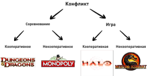
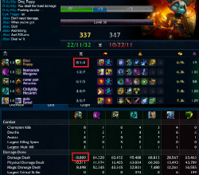
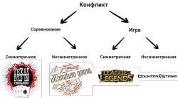
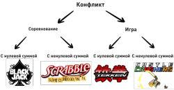
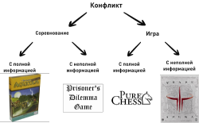
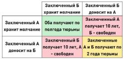

Цель данной статьи — создать симбиоз таксономии творческого самовыражения и математической теории игр. Это поможет развить таксономию предложенную ранее, а также подвести её под математический базис.
Для раскрытия понятийного аппарата и определения точки с которой возможно развитие представленной ранее таксономии, необходимо прежде всего ответить на вопрос «Какие признаки игры используются в математической теории игр?».
Характеризующими признаками подобных игр являются:
Третий и четвертый признаки не позволяют выйти нам за пределы данной категории, т.к. они одновременно удовлетворяют требованиям категории "Соревнование" и категории "Игра".
Пятый признак соответствует категории "Забава", но т.к. у нас есть признаки категории более низкого класса "Конфликт", то для развития мы выберем именно её.
Кооперативные или коалиционные игры в теории игр — игры, в которых игроки могут объединяться в группы, взяв на себя некоторые обязательства перед другими игроками и координируя свои действия.
Некооперативные игры — игры, в которых каждый игрок должен играть за себя.

Слева направо: 1. Настольная игра Dungeons&Dragons 2. Настольная игра Монополия 3. Шутер от первого лица Halo 4. Файтинг Mortal Kombat
Гибридные игры — игры, которые включают в себя элементы кооперативных и некооперативных игр. В таких играх игроки могут образовывать группы, но игра может вестись в некооперативном стиле (к примеру kill stealing в League of Legends).

Скриншот из игры League of Legends
Каждый игрок в такой игре будет преследовать интересы своей группы, вместе с тем стараясь достичь личной выгоды. Подобное поведение носит название «Трагедия общин».
Симметричная игра — игра, в которой игроки могут поменяться местами и при этом их выигрыши за одни и те же ходы не изменятся (соответствующие стратегии игроков равны).
Несимметричная игра — игра, в которой соответствующие стратегии игроков не равны.

Слева направо: 1. Техасский холдем разновидность карточной игры покер 2. Экономическая игра-дилемма Ультиматум 3. Многопользовательская онлайн арена League of Legend 4. Командный онлайн шутер Counter-strike.
Из приведенных здесь примеров игр, хочу отдельно рассказать про игру Ультиматум. Данная игра относится к классу игр, используемых в экспериментальной экономике. Правила довольно просты. Один из участников должен разделить некоторую сумму денег (для наглядности возьмем сумму в миллион евро) между собой и вторым игроком, причем размер долей он решает сам. Второй участник должен решить, взять ли предложенную сумму или отказаться. В случае отказа оба участника остаются ни с чем. В случае согласия все остаются при своих долях.
Казалось бы что игрок два должен соглашаться в любом случае, ведь иначе он не получает ничего. Однако экспериментальные исследования показывают, что при предложении доли меньше 30% второй игрок отказывается от предложения.
В следующей статье я рассмотрю эту игру подробнее с целью раскрытия механизма принятия решения игроком с позиции нейробиологии.
Игры с нулевой суммой — игры, в которой игроки не могут увеличить или уменьшить имеющиеся игровые ресурсы или фонд игры.В этом случае сумма всех выигрышей равна сумме всех проигрышей при любом ходе.
Игры с ненулевой суммой — игры, в которых игроки могут увеличить фонд игры. Сюда также входят игры, в которых выигрыш одного игрока не обязательно означает проигрыш другого, и наоборот.

Слева направо: 1. Карточная игра Blackjack 2. Настольная игра Scrabble 3. Файтинг Tekken 4. Экшн Castle crashers
Параллельные игры — игры, в которых игроки ходят одновременно, или по крайней мере, они не осведомлены о выборе других игроков до тех пор, пока все не сделают свой ход.
Последовательные или динамические игры — игры, в которых участники могут делать ходы в заранее установленном либо случайном порядке, но при этом получают некоторую информацию о предшествующих действиях других.
Слева направо: 1. Игра Rock-paper-scissors (Камень-ножницы-бумага) 2. Настольная игра Jenga 3. Сетевой режим игры стратегии в реальном времени Starcraft 2 4. Пошаговая стратегия Heroes of Might and Magic 3
Игры с полной информацией — игры, в которых игроки знают знают все ходы, сделанные до текущего момента, равно как и возможные стратегии противников.
Игры с неполной информацией — игры, в которых игрокам не известна информация о всех ходах противника.

Слева направо: 1. Семейная версия настольной игры Agricola 2. Игра-дилемма Prisoner's dilemma (Дилемма заключенного) 3. Компьютерная логическая игра Pure Chess 4. Онлайн шутер от первого лица Quake 3 Arena
По аналогии с игрой Ультиматум, хочу отдельно рассмотреть игру-проблему Дилемма заключенного. Небольшое вступление: во всех судебных системах кара за бандитизм (совершение преступлений в составе организованной группы) намного тяжелее, чем за те же преступления, совершенные в одиночку.
Формулировка игры такова:
"Двое преступников, А и Б, попались примерно в одно и то же время на сходных преступлениях. Есть основания полагать, что они действовали по сговору, и полиция, изолировав их друг от друга, предлагает им одну и ту же сделку: если один свидетельствует против другого, а тот хранит молчание, то первый освобождается за помощь следствию, а второй получает максимальный срок лишения свободы (10 лет). Если оба молчат, их деяние проходит по более лёгкой статье, и каждый из них приговаривается к 0,5 года. Если оба свидетельствуют против друг друга, они получают минимальный срок (по 2 года). Каждый заключённый выбирает, молчать или свидетельствовать против другого. Однако ни один из них не знает точно, что сделает другой. Что произойдёт?"

Матрица игры Prisoner's dilemma (Дилемма заключенного)
Проблема заключается в том, что если игроки стремятся максимизировать свой выигрыш, то они приходят к неоптимальному решению, в то время как сотрудничество было бы выгодно обоим игрокам.
Несмотря на это, донести на второго игрока — самый рациональный выход для игрока в данной игре, поскольку вне зависимости от того, что выберет другой игрок, каждый выигрывает больше, если предаст.
Если рассуждать со стороны заключенного, то «Если второй молчит, то можно донести на него и сразу выйти на свободу или же сесть на полгода. Если второй меня заложит, то я могу сесть либо на 10 лет, либо на 2 года».
Бесконечные игры — игры, способные продолжаться бесконечно долго, причем победитель и его выигрыш не определены до окончания всех ходов.
Дискретные игры — игры, имеющие конечное число игроков, ходов, событий, исходов и т.п.
Слева направо: 1. Онлайн ММОРПГ Dream Of Mirror Online 2. Настольная игра Uno 3. PVP сервера онлайн ММОРПГ World of Warcraft 4. Настольная карточная игра Magic: The Gathering
В итоге мы получаем следующую схему раскрытия таксономии творческого самовыражения.
{kind=link}
{kind=link}
{kind=link}
{kind=link}
{kind=link}
{kind=link}
{kind=link}
{kind=link}
{kind=link}
{kind=link}